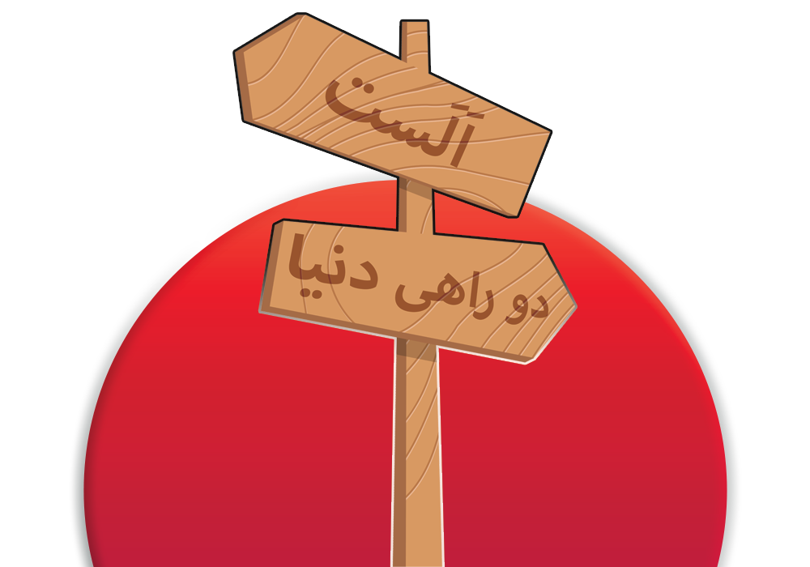
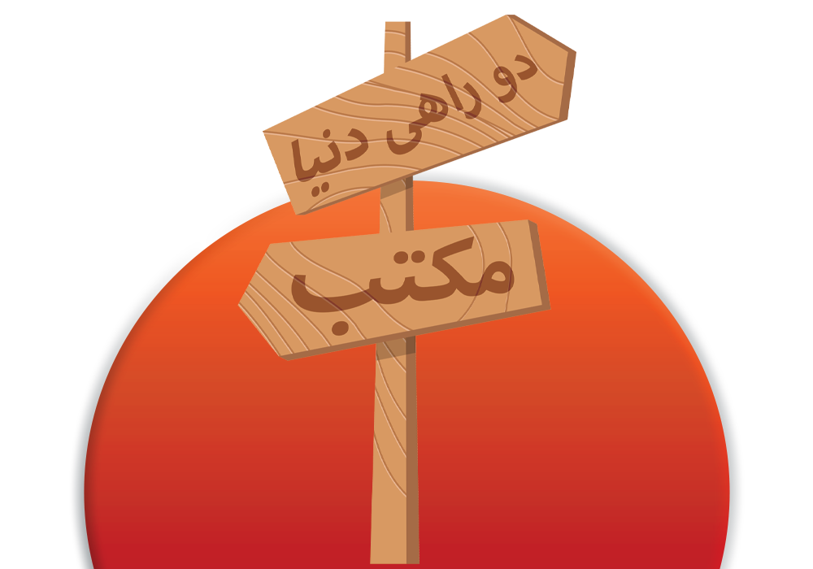
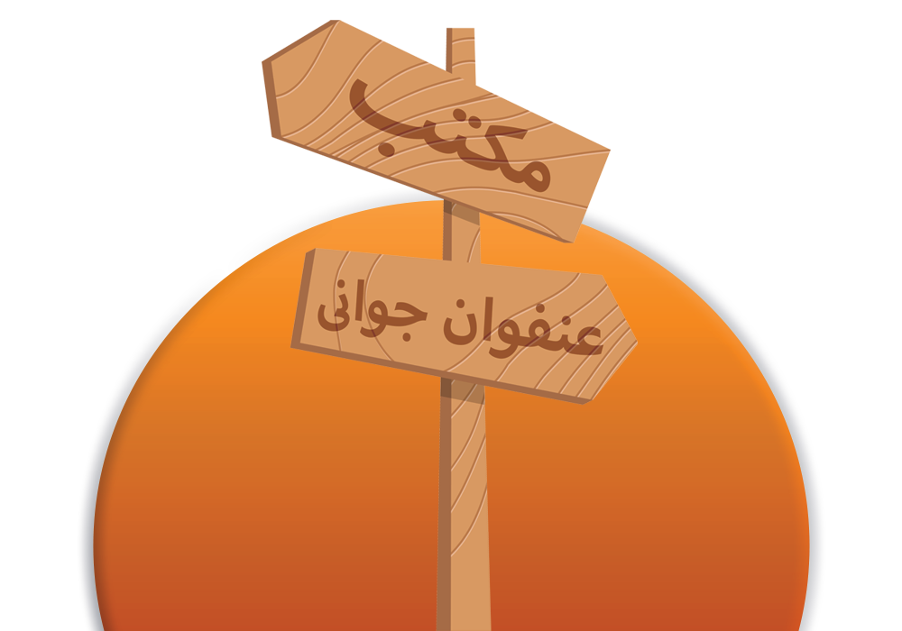
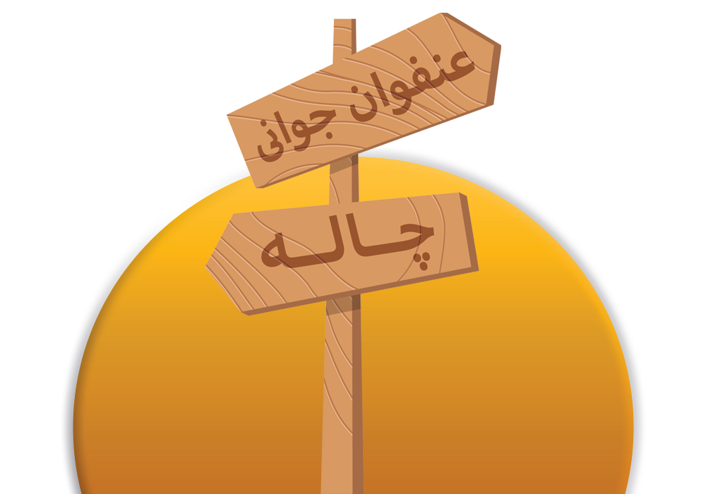
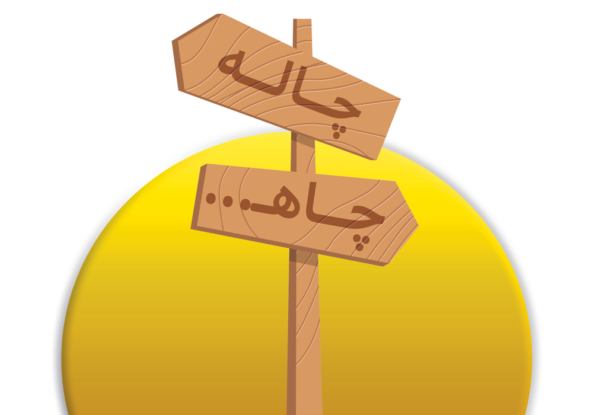

از نیمههای فروردین ۷۵ چند روزی بیشتر نگذشته بود که به دنیا آمدم خانه به
تازگی
از کشمکشهای خانهتکانی و جدالهای نابرابر دید و بازدیدهای عید جان سالم به در برده بود
(البته آن روزها کمتر کسی در فکر پسته کاسه آجیل بود) که با قدوم مبارک من (خداوند همه
خودپسندان عالم را حفظ بفرماید! آمین!) دوباره زیر و رو شد...


بر عکس همه انسانهای عادی تحصیلات خود را از دبستان شروع کردم و مدارج
ترقی را
یکی پس از دیگری با همیت و جدیت فراوان واترقیدم... القصه بالاخره با هر زاجراتی که بود مقاطع
راهنمایی و دبیرستان را به همین منوال طی نمودم که ناگهان درخت (فیلمی به نویسندگی و کارگردانی
صفی یزدانیان)...
تازه داشت دلم به داشتن یک سیکل و یک دیپلم نیمبند گرم میشد که به زور و
ضرب
چماق، من و خَیلتاش هم نسلی را روی کرسیهای کنکور نشاندند... چشمتان روز بد نبیند خداوند نصیب
و قسمت گرگ بیابان نکند چه نامبارک سحری بود و چه نافرخنده شبی بله درست حدس زدید شب اعلام
نتایج را میگویم مخلص کلام وارد قیف برعکسی شده بودیم که آنچنان هم که میگفتند بر عکس نبود،
از دور دل میبرد و از نزدیک زَهره را...


دیگر چه میشد کرد از آنجایی که مرد آن است که در کشاکش درد سنگ زیرین
آسیاب باشد تا خرداد ۹۷ سنگ زیرین آسیاب بودم و گهگاهی برای تنوع نقش خود را با زبان بستهای که
سنگ آسیاب را میچرخاند عوض میکردم... فیالجمله نماند از معاصی منکری که نکرده باشم و مسکری
که نخورده باشم (البته که شراب ما شمیم شعر شماست، شب سیاه زلف شماست) در پایان دوره چهار ساله
کارشناسی با راهنمایی استاد ارجمند سرکار خانم دکتر جوهری از چاله درآمدم و به چاه افتادم.
دست بر قضا در مقطع ارشد در دانشگاه صنعتی اصفهان به صورت بدون آزمون
(شما بخوانید استعداد درخشان) در گرایش شناسایی و انتخاب مواد پذیرفته شدم... سرتان را درد
نیاورم، پس از پیچ و واپیچهای مسیر آزمایشگاه به کرونا، کرونا به خانه، پایان نامه خود را در
زمینه اتصال یکی از آلیاژهای تیتانیوم به فولاد زنگ نزن آستنیتی با چاشنی نانولولههای کربنی به
پایان رساندم... و هم اکنون لب جوی نشستهام و گذران عمر میبینم...

راستی داشت فراموشم میشد... من ایمان آقایی قهدریجانی، عاشق کار
گروهی، علاقمند به حوزه تکنولوژی و کارشناس تولید محتوا هستم و در کنار مدرک کارشناسی ارشد
مهندسی مواد، در نویسندگی و طراحی وب هم دستی بر آتش دارم... الغرض اگر به دنبال همکار هستید،
روی من حساب کنید...